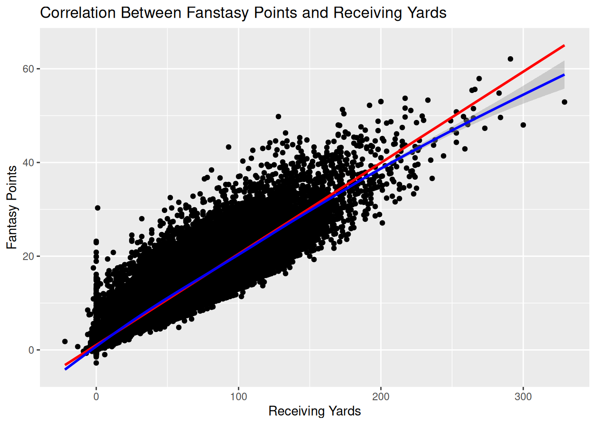

Background: When determining what role a player plays on their team you have to look at a series of different stats but a some of the bigger stats to look at are reception yards and target, and they both happen to be good for looking at fantasy points. Method: I did a series of correlation test to see how well of a correlation fantasy point had to reception yards and targets. I also broke up the test by the positions WR, TE, and RB. Results: I found out the correlations vary per position, WR is as expected very strong correlation between reception yards and fantasy points but moderate when it comes to targets. TE slightly above moderate when it comes to targets correlation with fantasy points but not as strong as the WR when it come to reception yards. RB had a moderate correlation when it came to both targets and reception yards. Discussion: Therefore in order to get a full idea of what leads to more fantasy points it’ll be better to dive into one position specifically instead of an over view. But either way the results give a good starting point and idea of what to expect.
3 Background
When you think of football and skill positions what is one thing you think about. There is a great chance you think about catching the ball. When the NFL breaks down the stats of a football player there are a multitude of stats that focus solely on getting the ball and catching it. Today we will be looking at two of those stats, reception yards and targets. Reception yards is the put together total of yards at time of reception, so how many yards the ball went before being caught, and yards after catch, how many yards the player went with the ball after catching it. Targets is simply how many times the quarterback threw or handed off the football to the intended player. Why is looking at these stats important? It is important to look at these stats because it gives us an idea of how the player performs on the team and what role they play on the team. “Certain players fill a high-risk high-reward role, putting up 15+ yards per reception but not catching those passes at a high rate. Elite receivers do not always put up the most yards per reception, but their high catch percentage and usage leads them to be the most valuable players.” (Bond, 2022) Stats like reception yards and targets help us figure out who are big time player or the consistent reliable player, especially if you are a fantasy football player. In fantasy football stats such as reception yards and targets are some of the best ways to figure out if you should keep the player or cut them, it also give you in idea of how many fantasy points that play could bring in week to week.
3.1 The Research
The question I will be testing today is, does reception yards and targets correlate with more fantasy points? The reason I am looking into this is because I wonder if players that are more consistent make up most of the fantasy points or is the players that don’t get a lot of catch but make big plays get the most fantasy points. I hypothesize that the players with more consistent yards and targets will make up the most when it comes to fantasy points. I believe this because as someone who has played fantasy football it’s usually the big play players that don’t do well on average and tend to only have a big game every other week.
4 Method
I will be running a series of tests looking at the correlation between reception yards and targets with different skill positions: WR, TE, and RB
5 Data
First, after loading my data, look at the top for reminder, I made a subset of my data to include only WR, RB, and TE.
`geom_smooth()` using formula = 'y ~ x'
`geom_smooth()` using formula = 'y ~ s(x, bs = "cs")'

6 Results
We will break the results down by position
6.1 WR Results
Looking at the results of the correlation tests for the WR shows results that might be expected. Starting with the correlation between targets and fantasy points resulting in a 0.6054148 meaning there is a positive moderate correlation. We can interpret this result by thinking about it this way, just because the WR is being targeted doesn’t mean they will get a lot of fantasy points. Clearly the more targets a player gets the more chance for then to get fantasy points leading to that moderate correlation. Looking at the reception yards to fantasy points is a whole other story, there is a very strong positive correlation of 0.9234268. This makes sense when it comes to fantasy points because a bulk of WR points are based off of how many yards they get from catching and running after the catch with the ball. Leading to a very strong correlation. Looking at the difference between the 2 different correlations we can interpret that as not every player with a lot of reception yards has a lot of targets. Suggesting that a portion of the points from reception yards are due to the big play players.
6.2 RB Results
The RB results surprised me both scored a lower correlation than I expected. The test between targets and fantasy points had a slightly moderate positive correlation of 0.4961392, and the test between reception yards and fantasy point is a moderate positive correlation of 0.6336602. This leads me with the question, why did the results come out this way? In honesty with the type of tests I did I can’t tell you what factor is causing them to have a lower correlation than with the WR because in my mind WR and RB go hand in hand when it comes to fantasy points, there like one of the same. I have 2 theories, one is because RB are duel threats meaning they can run the ball on the ground or be receivers, and two they are one of the few positions that lose points a lot due to losing yardage due to a play. Why do these theories matter to the test results because of the data I used to produce the tests a lot of RB gain most yardage on the ground so there isn’t a lot of big numbers receiving yards that would relate to a lot of fantasy points; and since the RB position can be prone to losing yardage therefore getting negative points means that there will be games that they barely score any points leading to the low correlation between targets and fantasy points because they can lose points depending on the play.
6.3 TE Results
The TE position makes sense with how the results came up, kind of middle of the pact. The TE on the test between targets and fantasy points had a moderately positive correlation of 0.6368617, and on the test between reception yards and fantasy points had a strong correlation of 0.8804847. The TE correlation with targets lines up with the WR because like the WR, TE make there points through catching the ball. The biggest thing to take away from the TE results is the correlation between reception yards and fantasy points and unlike the WR the TE’s correlation isn’t as strong. This is probably due to the fact most TE are used for short, “easy” passes to get some guaranteed yardage instead of a go long. So, the TE is more dependent on getting a touchdown to get there points unlike the WR who can get a lot of points by simply getting a lot of yards.
7 Discussion
Targets and reception yards are big stats that let us determine what role a player may play on their team. The WR have a very strong correlation between reception yards and fantasy points telling us that WR’s score a lot of points simply by catching the ball. But since they had only a moderate target rate it shows that big play players make up a good portion of the reception yard points. Looking back at my hypothesis I was trying to discover if the more reception yards and more targets means that a player will get a lot of fantasy points and now looking at the data it shows that that hypothesis is only partially true. It’s mostly true with WR but it isn’t fully true for TE and it definitely isn’t true RB. I still feel that these tests are a good representation of the data and answered the questions I was seeking to find. I did this test again I would probably focus more deeply on a singular position then just a simple overview.
7.1 Strengths and Limitations
I believe that the biggest strength of my tests is that they were straight to the point and answered what I sought out to achieve. For limitations it would be helpful if I included a visual so that it would be easier to interpret the data, and the fact that I didn’t test for any outside effects meaning I don’t know the true reasons why some correlations are less than others outside of speculation.
7.2 Conclusion
There you have it, in this study we went through multiple positions to see if there was a correlation between more reception yards and more targets leading to bigger fantasy scores. We came up with that it varies from position to position, leading for us to have to dig a little deeper for determining whether to keep or cut players or to predict when there next big game might be. But for a starter point these stats are a bad place to start.
8 References
Analytics, D. S. (2022, April 18). Yards per reception and its role in wide receiver evaluation. Dartmouth Sports Analytics. https://sites.dartmouth.edu/sportsanalytics/2022/04/21/yards-per-reception-and-its-role-in-wide-receiver-evaluation/